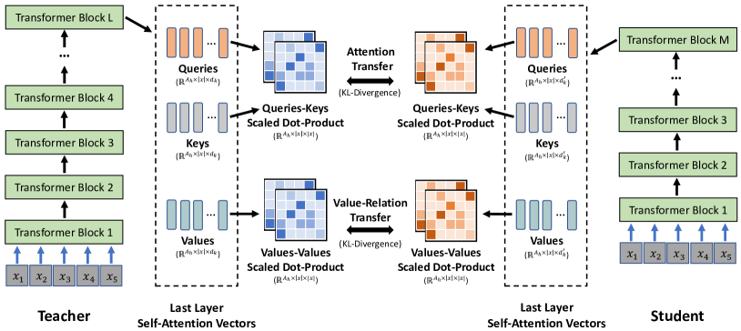

发展脉络
后训练经历了 SFT、RLHF、DPO，再到可验证奖励和推理时扩展；关键转变是从模仿答案转向优化可检查的行为和过程。
训练一个 70B 的老师太贵，但「偷」它的能力很便宜。知识蒸馏的本质，是用大模型产出的信号去训练小模型——信号可以是答案、中间特征，甚至思维链。同一套机制，既能换小模型继承能力，也能把大模型压缩到可部署的尺寸。这一页把蒸馏的机制、方法谱系、工程实践讲透。
蒸馏是「师徒制」：老师（大模型）在给定输入上产生软信号——答案分布、隐层特征或推理轨迹——学生（小模型）在这些信号上做监督学习。学生学到的不只是「正确答案」，还有老师对「模糊地带」的犹豫和推理方式，这正是蒸馏比直接用小数据训练更高效的原因。
把蒸馏放到一个统一视角下看，「知识」可以分三个层次，对应三种主流蒸馏方式：
| 蒸馏类型 | 迁移的信号 | 典型场景 | 代价 |
|---|---|---|---|
| Response（输出）蒸馏 | 答案概率分布 | 通用能力迁移、指令跟随 | 低（只需老师推理） |
| Feature（特征）蒸馏 | 中间层隐状态 | 同架构压缩、保语义 | 中（需对齐层位） |
| CoT（过程）蒸馏 | 思维链轨迹 | 推理能力迁移 | 高（轨迹标注贵） |
| 数据合成蒸馏 | 老师生成的训练数据 | 扩充训练集、小模型指令数据 | 低-中（质量把控难） |
这个统一视角还有一个实用价值：它给了排查方向。学生能力不够时，先问「丢的是哪一层知识」——如果是简单问答答不对，多半是输出层没对齐（查软标签数据与温度）；如果是复杂推理不成立，多半是推理轨迹没迁移（查 CoT 数据质量）；如果是风格不对但内容对，则更可能是特征层的语义偏差。三层知识对应三种调试抓手，比笼统地「调损失权重」高效得多。
直接用小模型的「正确答案」训练（硬标签）也能学到能力，但软标签多给了关键信息：老师对「模糊地带」的犹豫。
数学上，软标签蒸馏用 KL 散度对齐老师与学生输出分布，配温度参数 T 软化分布：
$$\mathcal{L} = \alpha \cdot \text{KL}(p_{\text{teacher}}^{(T)} \| p_{\text{student}}^{(T)}) + (1-\alpha) \cdot \text{CE}(y_{\text{hard}}, p_{\text{student}})$$
温度 T 越高分布越「平」，越能暴露类间关系。典型做法：T 用 2-4，α 用 0.7-0.9（偏重软标签）。
这里有一个新手常问的问题：既然软标签信息量更大，为什么还要保留硬标签那一项？答案是软标签不保证「正确答案」概率够高。老师对一道题的信心可能只有 43%，把学生只往软分布上推，学生可能连「谁是正确答案」都学不牢；硬标签项的作用是钉死「正确的那一类必须显著高于其他类」，而软标签项负责「其他类之间要像老师那样排序」。两者一个管「准」、一个管「结构」，缺一个都会在测试集上露出短板——这也解释了为什么联合损失里 α 极少取到 0 或 1 的极端。
2023-2026 年的 LLM 蒸馏实践，主要围绕「怎么生成高质量训练信号」展开：
| 方法 | 信号来源 | 优点 | 代表工作 |
|---|---|---|---|
| 指令蒸馏 | 老师生成的指令数据 | 数据可扩展、覆盖广 | Alpaca、Vicuna |
| CoT 蒸馏 | 老师生成的推理链 | 推理能力迁移 | Flan 系列、Orca |
| 特征蒸馏 | 中间层隐状态 | 语义保真 | MiniLM |
| 自我蒸馏 | 模型自己的输出 | 无需大老师 | Self-Distillation 系列 |
| 在线蒸馏 | 师生同步训练 | 老师持续变强 | Online KD 系列 |
「特征蒸馏」这行值得展开讲——它是「白盒」路线的核心。MiniLM 是这条线最经典的工作之一，下面这张是它的论文原图：学生模仿的不再是老师的输出分布，而是老师最后一层 Transformer 的自注意力行为——也就是「模型内部怎么把注意力分给上下文里每个 token」这件事本身。

读这张图看两块。左边是老师（Teacher）：输入一组 token 之后，最后一层 Transformer 会产出两个关键信号——自注意力分布（每个 token 应该「看」上下文里哪些位置、各占多少权重）和值关系（value-relation）（token 之间的值向量在语义上的关联模式）。右边是学生（Student）：它被要求在这两个信号上和老师对齐，同时仍然自己从头学做任务。中间那根「对齐」的连线，就是蒸馏损失的落点。
为什么模仿「注意力分配」比模仿「答案」更深？因为输出分布只反映了「最终结论」，而注意力分布反映了「达成结论的信息组织方式」。MiniLM 的观察是：学生把老师的自注意力分布学得像了，即使层数、维度都比老师小一截，也能在 GLUE 等任务上追平甚至反超同规模的 BERT 蒸馏基线。这正对应本页第二节的「三层知识」框架——输出信号是最浅的一层，中间特征（包括注意力）是更深的一层，代价是对齐成本更高（层位要设计、计算更贵）。MiniLM 之所以选「最后一层」而不是逐层对齐，也是在深度与成本之间取的折中。
选方法有一个反直觉的经验：别一开始就上最复杂的方法。CoT 蒸馏听起来高级，但轨迹标注贵、清洗难，如果任务本身不需要多步推理，迁移思维链属于浪费。反过来，通用指令蒸馏看起来简单，却对种子数据的广度极其敏感——种子任务覆盖不到的能力，老师再强也变不出来。先用指令蒸馏跑通闭环、把数据管线稳定下来，再按评估差距决定要不要上更深的迁移方式，是更稳的推进顺序。
实际做一次 LLM 蒸馏，关键是「老师数据生成 → 质量控制 → 学生训练」三步。数据质量往往比算法更影响结果。
import torch
import torch.nn.functional as F
def distillation_loss(student_logits, teacher_logits,
hard_labels, temperature=3.0, alpha=0.8):
"""软硬标签联合蒸馏损失
Args:
student_logits: 学生模型 logits
teacher_logits: 教师模型 logits（同一输入）
hard_labels: 真实标签
temperature: 软化温度
alpha: 软标签损失权重
"""
# 1. 软标签损失：KL 散度（带温度）
soft_loss = F.kl_div(
F.log_softmax(student_logits / temperature, dim=-1),
F.softmax(teacher_logits / temperature, dim=-1),
reduction="batchmean"
) * (temperature ** 2) # 温度平方缩放保持梯度量级
# 2. 硬标签损失：交叉熵
hard_loss = F.cross_entropy(student_logits, hard_labels)
# 3. 联合损失
return alpha * soft_loss + (1 - alpha) * hard_loss
def train_student(student, teacher, dataloader, epochs=3):
"""蒸馏训练主循环"""
opt = torch.optim.AdamW(student.parameters(), lr=5e-5)
teacher.eval()
for epoch in range(epochs):
for batch in dataloader:
input_ids = batch["input_ids"]
hard_labels = batch["labels"]
with torch.no_grad():
teacher_logits = teacher(input_ids).logits
student_logits = student(input_ids).logits
loss = distillation_loss(
student_logits, teacher_logits, hard_labels
)
opt.zero_grad()
loss.backward()
opt.step()
print(f"epoch {epoch}: loss={loss.item():.4f}")业界共识：蒸馏的效果上限由老师数据的质量决定，而不是学生模型的架构。Alpaca 与 Vicuna 的早期差距、Orca 系列的质量控制流程，都指向同一个结论——「老师说什么」比「学生怎么学」更重要。
| 质控手段 | 做什么 | 效果 |
|---|---|---|
| 规则过滤 | 剔除空回答、超短/超长输出 | 去除明显噪声 |
| LLM 质量评审 | 用另一个 LLM 打分过滤 | 提升整体质量 |
| 去重（MinHash） | 移除语义重复数据 | 提升多样性 |
| 人工抽检 | 随机抽看标注质量 | 发现系统性偏差 |
| 困难样本增强 | 保留老师犯错但有价值的样本 | 学生学会边界 |
质控的执行主体往往是另一个更便宜的模型——让一个 7B 的评审模型去给 70B 老师生成的数据打分，成本远低于人工，却能把明显低质量样本拦下来。实践中「评审模型」与「学生模型」甚至可以复用同一份能力数据训练，形成一条良性循环：老师产出 → 评审过滤 → 学生训练 → 评审能力提升 → 过滤更准。
想获得「小模型」，蒸馏不是唯一的路。量化、剪枝、蒸馏三者的定位完全不同，工程上常常组合使用：
| 维度 | 蒸馏 | 量化 | 剪枝 |
|---|---|---|---|
| 是否重训 | 是 | 否（仅校准） | 部分需重训 |
| 能跨架构 | 能（老师→学生不同架构） | 否 | 否 |
| 压缩比 | 可到 10-100 倍 | 2-4 倍 | 1.2-2 倍 |
| 耗时 | 长（训练） | 短（校准） | 中 |
| 典型组合 | 先蒸馏 | 后量化 | 与蒸馏配合 |
| 方向 | 进展 | 影响 |
|---|---|---|
| 推理蒸馏 | 长思维链迁移到小模型 | 小模型推理能力接近大模型 |
| 数据合成规模化 | 合成数据管线成熟 | 蒸馏数据成本大降 |
| 自我蒸馏 | 模型自己教自己 | 无需更大老师 |
| 蒸馏 + RL | 蒸馏后 RL 增强 | 能力进一步逼近 |
| 可验证蒸馏 | 只在可验证任务上蒸馏 | 质量可控、防幻觉迁移 |
把这几条进展放到一起看，趋势非常清晰：蒸馏正在从「迁移知识」走向「迁移行为规范」。长思维链蒸馏迁移的是推理行为，可验证蒸馏迁移的是「只在能验证处作答」的谨慎行为，蒸馏加 RL 迁移的是「把会做的题做对」的优化行为。对工程师而言，这意味着蒸馏的对象不限于能力，还包括风格、边界感这类软约束——小模型正在越来越接近「大模型的缩小版」而不是「大模型的拙劣模仿」。
公式只告诉我们「T 越大分布越平」，但平到什么程度、对学生学习有什么影响，最好拿一组真实数字演算一遍。假设老师模型对某个样本输出了四个类别的原始 logits：猫 3.0、狗 1.5、狐狸 0.5、兔子 -1.0。softmax 的公式是 p_i = exp(z_i / T) / Σ_j exp(z_j / T)，把不同 T 代进去，结果差异非常大。
先看 T=1（即普通 softmax）：exp(3.0)≈20.09，exp(1.5)≈4.48，exp(0.5)≈1.65，exp(-1.0)≈0.37，四项相加约 26.59，于是四个概率约为：猫 75.6%、狗 16.9%、狐狸 6.2%、兔子 1.4%。猫被 e^x 的指数放大效应捧得很高，类间结构几乎被压扁——狐狸和兔子都只剩个位数概率，学生从中读不到「狗和狐狸都比兔子更接近猫」这层信息。
再把 T 提到 3：每个 logits 先除以 3，得到 1.0、0.5、0.167、-0.333，取指数后是 2.72、1.65、1.18、0.72，求和 6.27，概率变为猫 43.3%、狗 26.3%、狐狸 18.9%、兔子 11.4%。分布明显变平，兔子也有超过一成的概率——此时软标签才真正把「类间相似度」暴露给学生：越是接近真实类别的类概率越高，学生能学到的结构远比「只有猫对」要丰富。
反过来，如果把 T 压到 0.5，logits 除以 0.5 等于放大两倍：6.0、3.0、1.0、-2.0，取指数后猫高达 94.6%、狗 4.7%、狐狸约 0.6%、兔子接近 0。这已经退化回「接近 one-hot 的硬标签」，温度太低等于白白放弃了蒸馏的优势。这就是为什么实践中 T 常取 2-4 这个区间：太低丢信息，太高又让损失梯度失去方向。
温度还会影响蒸馏损失的量纲。软标签蒸馏用 KL 散度对齐老师与学生的概率分布：KL(p_t ‖ p_s) = Σ_i p_t(i) · log(p_t(i) / p_s(i))。延续上面的例子，假设学生用 T=3 学到的是猫 55%、狗 30%、狐狸 10%、兔子 5%，老师是猫 43.3%、狗 26.3%、狐狸 18.9%、兔子 11.4%，代入公式：0.433×ln(0.433/0.55) + 0.263×ln(0.263/0.30) + 0.189×ln(0.189/0.10) + 0.114×ln(0.114/0.05) ≈ 0.433×(-0.239) + 0.263×(-0.132) + 0.189×0.636 + 0.114×0.824 ≈ -0.103 - 0.035 + 0.120 + 0.094 ≈ 0.076。也就是说这一条样本的软标签损失约 0.08。对比硬标签交叉熵：学生认为兔子概率只有 5% 而答案恰好是兔子，CE = -ln(0.05) ≈ 3.0——两者相差两个数量级，这正是软标签「平滑、好优化」的数学来源。
本页第四节的代码里有一行注释：「温度平方缩放保持梯度量级」。原因是：把 logits 除以 T 再做 softmax，相当于把「输入到 softmax 的尺度」缩小了 T 倍。对分布做 log 后再取梯度，链式法则会把 1/T 一路带到梯度里——老师侧和学生侧各贡献一个 1/T，总共梯度被缩小 T² 倍。如果不乘回来，同样的学习率在温度 3 时更新量只有温度 1 时的九分之一，训练会慢到几乎不动。
用一个极简例子验证：单样本、单类别权重 w，学生 logits = w，T=3。学生的软化概率 p_s = exp(w/3)/Z，KL 对 w 的导数量级大约是 1/3 乘上某个介于 -1 和 1 之间的数；而硬标签交叉熵对 w 的导数量级是 1 左右。所以乘 T² = 9 之后，梯度量级才回到「和硬标签损失可比」的水平，α 这个软硬权重才真正有可调的合理范围。这也是为什么很多蒸馏实现把 T 当作训练超参而不是固定值——改 T 必须同步检查学习率或补偿系数，否则一切指标都会漂。
一个常见误读：T² 补偿只在「老师概率视为常数」的近似下严格成立，实际实现里老师和学生两侧都除以 T，最终经验上 T² 仍是最好用的经验系数。别过度推导，记住结论即可：温度每升高一倍，把软标签损失乘以 4 来补偿梯度量级。
「既然要一个能跑的任务模型，为什么不直接用任务数据微调一个小模型，非要麻烦老师？」这是新手最容易问的问题。两条路线的差别不在「谁更省」，而在「监督信号里到底装了什么」。
直接微调（硬标签监督）：小模型只见到「这道题的正确答案是 B」，它只能把 B 的概率拉向 1，把其他答案压向 0。如果训练数据里 B 与 C 长得非常像（比如数学题里两个相近的化简路径），模型学到的只是「B 对 C 错」这两个孤立的事实，样本间相似关系、不确定性都无从谈起。
蒸馏（软标签监督）：小模型看到的是老师的完整分布。仍然举上一节的例子，即使兔子不是正确答案，老师也给了它 11.4% 的概率——学生学到的是「猫狗狐狸兔子构成一张相似度地图」。当测试时遇到训练里没见过的变体，这张地图能让学生把概率合理分配到相邻类别上，而不是武断地只押一个。用一个常见实验量级说明：在 1 万条指令数据上，直接微调 3B 模型测试准确率约 62%，同样数据用 70B 老师的软标签蒸馏约 67%——差距集中在「类间相近」的样本上（这类样本上两者分别约 68% 与 75%）。
| 维度 | 直接微调小模型 | 软标签蒸馏 |
|---|---|---|
| 监督信号 | 正确答案（硬标签） | 老师输出分布（软标签） |
| 信号里的额外信息 | 几乎没有 | 类间相似度 + 不确定度 |
| 数据标注要求 | 需要带标注的任务数据 | 种子数据即可，老师自动打标 |
| 小样本时的表现 | 易过拟合、方差大 | 有老师先验，更稳 |
| 计算开销 | 只训一次小模型 | 先跑老师推理（贵），再训小模型 |
| 能力上限 | 受小模型容量限制 | 受老师质量 + 学生容量共同限制 |
两者的取舍非常明确：预算紧张、老师不可得时，直接微调是底线方案；手上有好老师、且在意泛化与数据效率时，蒸馏明显更优。值得注意的是蒸馏并不排斥硬标签——本页第二节的联合损失就是「软标签保泛化 + 硬标签保准确」的组合，很多生产配方把两者按 4:1 到 9:1 混合。
很多人好奇「蒸馏到底比直接微调好多少」，但直接读论文数字意义不大——数据集不同、老师不同，结论不可移植。更靠谱的做法是自己设计一个 1 小时能跑完的对照实验。下面给出一个具体可执行的方案。
第一步，固定变量。取同一个学生模型（比如 3B 的开源模型），同一个种子数据集（比如 1000 条带标签的指令样本），唯一的自变量是「监督信号」：对照组用硬标签直接微调，实验组让一个 70B 老师给同样的输入生成软标签/完整输出，再做蒸馏。学习率、epoch、batch size 全部保持一致。
第二步，选对评测指标。别只看总准确率——那是两边的平均水平，掩盖了差异。要拆成两组看：一是「类间相近样本」的准确率（比如两个答案都合理、只有细微差别的题），二是「训练集外变体」的准确率（把训练题的表述改几个字再测）。第一组直接体现软标签「类间相似度」的价值，第二组体现泛化能力。
第三步，预期结果与判读。如果实验做出来两组都没差异，先别急着下「蒸馏没用」的结论——检查三件事：老师是否真的比学生强（老师都答不对，软标签就是噪声）；温度 T 是否落在 2-4（T 太低软标签退化成硬标签）；α 是否太低（硬标签主导，类间信息被淹没）。这三处任一有误，蒸馏的优势都会被吃掉。反过来，如果类间样本组有明显差距，就说明软标签的「语义结构」确实被学生学到了，值得把流程固化下来。
这个实验设计本身也是本页「只重训不评估」失败模式的解药：把评估表列出来、变量拆干净，蒸馏的效果就再也不是「感觉好像好一点」而是「在两个指定指标上差几个点」。
选择蒸馏方法前先回答一个问题：你能访问老师模型的内部吗？「能」与「不能」直接把蒸馏分成两大流派，选错流派等于带错工具上工。
白盒蒸馏：老师开源、权重可访问。除了输出分布，还能拿到中间隐层、注意力分布甚至每一层的梯度。MiniLM 等经典工作正是把老师的注意力矩阵和学生对齐做监督信号——迁移的是「模型在每一层怎么组织语义」这种深层知识。代价是苛刻：师生架构通常必须相近（层数、隐层维度要对齐），否则「第几层的特征跟第几层比」都要重新设计。
黑盒蒸馏：老师只以 API 形式存在（如商用大模型的接口），你只能拿到它的输出文本。此时唯一能做的是「输出级数据蒸馏」：拿老师的生成结果当训练数据。Alpaca、Vicuna、Orca 走的都是这条路。它的优势是通用——任何语言模型都能当老师，不需要开源，也不要求架构匹配；代价是只能迁移「结果」而迁移不了「中间过程」，上限低于白盒。
| 维度 | 白盒蒸馏 | 黑盒蒸馏 |
|---|---|---|
| 老师可访问内容 | 权重、隐层、注意力、梯度 | 仅有输出文本 / API |
| 可迁移的信号 | 软标签 + 特征 + 轨迹 | 软标签（输出级）为主 |
| 典型方法 | 特征蒸馏（MiniLM）、注意力对齐 | 指令蒸馏、CoT 蒸馏（Alpaca/Orca） |
| 架构要求 | 师生架构需对齐 | 无限制，任意模型可做老师 |
| 迁移深度 | 深（含中间表征） | 浅（仅输出结果） |
| 适用场景 | 自研开源模型、同架构压缩 | 商用 API 老师、快速数据扩充 |
现实里一个容易被忽略的点：白盒并不永远优于黑盒。当学生参数规模远小于老师时，老师的中间特征可能「太复杂」，学生反而学不动；此时退回到输出级蒸馏反而更稳。选择标准不是「哪个听起来更高级」，而是「学生能消化的知识层次有多深」。
蒸馏不是「老师一教，学生必会」。实操里翻车通常集中在下面几个模式，多数可以在训练前用规则拦住。
这些失败模式共享同一个根因：蒸馏的本质是「把老师的行为当作数据」，而行为数据的质量和分布直接决定学生上限。工程上的正确姿态是：把老师当供应商，把质控当采购流程——先验收老师数据，再谈学生训练。
本章讨论基础模型如何变成可用助手：监督微调、偏好数据、RLHF、DPO、GRPO、LoRA、蒸馏和安全对齐。
阅读提示：后训练首先是数据和目标的设计问题，其次才是算法名称；每种方法都在能力、稳定性、成本和可控性之间交换。
InstructGPT 的 SFT、奖励模型和 PPO 三阶段流程，是理解 RLHF 工业范式的主线。
人类偏好训练奖励模型并优化策略的早期奠基工作。
冻结基座、训练低秩增量的参数高效微调方法，适合结合页面代码估算显存。
把奖励模型和 PPO 目标化简为偏好分类损失，帮助比较 DPO 与 RLHF 的隐含 KL 约束。
GRPO 的代表性来源，展示可验证奖励、群组采样和推理强化的训练闭环。
资料优先选用原始论文、官方文档、大学课程和公共机构材料；链接按 2026-08-10 检索，具体版本以来源页面为准。
后训练经历了 SFT、RLHF、DPO，再到可验证奖励和推理时扩展；关键转变是从模仿答案转向优化可检查的行为和过程。
对比 SFT、偏好损失、PPO/GRPO 和 verifier 时，明确参考策略、KL 约束、奖励粒度、采样分组和拒绝样本处理。
更强的奖励信号可能带来 reward hacking、过度拒答、长度偏置或能力遗忘；必须联合看任务质量、安全和分布外表现。
RLVR、过程奖励、蒸馏和长轨迹训练正在融合，论文中的提升应通过独立 verifier 和可复现实验验证。
能区分响应、logit、特征和在线蒸馏，解释温度与数据覆盖怎样决定学生学到的是知识还是教师偏差。
先修预训练目标、SFT 和基本强化学习；区分训练信号、策略约束与部署行为。
在同一小型分类/语言任务上训练硬标签学生与温度 T=1/2/4 的软标签学生，固定训练步数；记录 KL、任务指标、校准误差和推理成本。
至少复现一组软标签使验证 KL 低于硬标签基线的配置；报告学生相对教师的质量差、参数量和延迟，并分析一个被继承的教师错误。